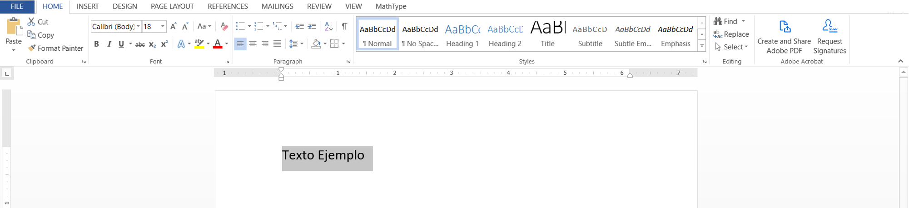
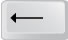

Dar Formato al Texto
Una vez que tiene abierto un documento de Word usted puede comenzar a escribir.

En el área de trabajo, podrá observar una pequeña barra vertical parpadeante que avanza mientras escribe. Esta barra se conoce como punto de intersección y sirve para saber dónde va a aparecer la siguiente letra que teclee.
Al momento de escribir en Word aparece también otro signo parecido a éste (el punto de intersección) y que al pasar por los Menús cambia a otra forma (generalmente cambia a forma de flecha inclinada). Este signo se mueve cuando usted mueve el ratón, ya que lo que está moviendo es el puntero.
Cuando se pulsan las teclas de dirección se mueve el punto de intersección.
Para saber más...

Otra diferencia con la máquina de escribir es que:
Con la máquina de escribir cuando se comete un error o falla al escribir, en el peor de los casos, se tiene que volver a iniciar el documento.
En el programa de Word cuando se comete un error al escribir lo que se puede hacer es pulsar la tecla Retroceso que regresase una posición borrando la última letra tecleada.

Si desea eliminar un texto que ya está escrito puede usar diferentes teclas para borrarlo.
¡Importante!
Antes, durante o después de escribir el texto en el documento Word, usted puede darle formato para que tenga la apariencia que usted desea. Para dar formato al texto, revise las secciones 24 a 29 de la unidad anterior dando clic aquí.